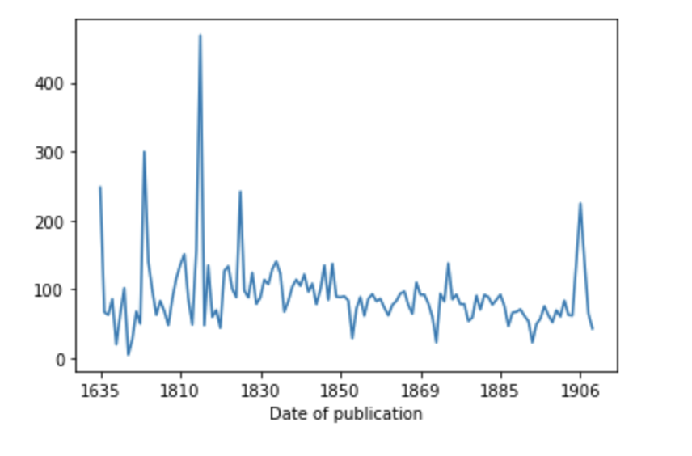

Daniel van Strien
About
Posts
Categories
All
(23)
Hugging Face
(1)
autotrain
(1)
data
(2)
flyswot
(1)
glam
(1)
synthetic-data
(2)
Running a Local Vision Language Model with LM Studio to sort out my screenshot mess
How I used a VLM to sort out my screenshot mess
Oct 23, 2024
Daniel van Strien
Using ColPali with Qdrant to index and search a UFO document dataset
Using Qdrant multivectors to index and search a UFO document dataset
Oct 2, 2024
Daniel van Strien
Generating a dataset of queries for training and fine-tuning ColPali models on a UFO dataset
Using an open VLM to generate queries for a multimodal retrieval model
Sep 23, 2024
Daniel van Strien
Synthetic dataset generation techniques: generating custom sentence similarity data
data
synthetic-data
This post is part of a series on synthetic data generation techniques. You may also want to check out
Awesome Synthetic (text) datasets
, where I will be collecting these posts.
May 23, 2024
Synthetic dataset generation techniques: Self-Instruct
data
synthetic-data
This post is part of a series on synthetic data generation techniques. You may also want to check out
Awesome Synthetic (text) datasets
, where I will be collecting these posts.
May 15, 2024
Tracing Text Generation Inference calls
How to trace text generation inference calls with Langfuse.
Apr 5, 2024
Daniel van Strien
Extracting Insights from Model Cards Using Open Large Language Models
Hugging Face
What do people talk about in their model cards?
Nov 27, 2023
How to load a Hugging Face dataset into Qdrant?
Loading a Hugging Face dataset into Qdrant is easy. This post shows how to do it.
Nov 8, 2023
Daniel van Strien
How to do groupby for Hugging Face datasets
How can you groupby in Hugging Face datasets?
Sep 18, 2023
Daniel van Strien
Exploring language metadata for datasets on the Hugging Face Hub
Using the huggingface_hub library to asses metadata on the hub
Jun 7, 2023
Daniel van Strien
Dynamically updating a Hugging Face hub organization README
Using the huggingface_hub library and Jinja to update a README dynamically
Mar 7, 2023
Daniel van Strien
Using Hugging Face AutoTrain to train an image classifier without writing any code.
autotrain
How can we train useful machine learning models without writing code?
Feb 22, 2023
A (very brief) intro to exploring metadata on the Hugging Face Hub
How we can use the
huggingface_hub
library to explore metadata on the Hugging Face Hub.
Jan 16, 2023
Daniel van Strien
Label Studio x Hugging Face datasets hub
Using label studio and the Hugging Face datasets hub to iteratively annotate a dataset
Sep 7, 2022
Daniel van Strien
Training an object detection model using Hugging Face
Training a Detr object detection model using Hugging Face transformers and datasets
Aug 16, 2022
Daniel van Strien
Searching for machine learning models using semantic search
Finding models on the Hugging Face hub using semantic search
Jul 26, 2022
Daniel van Strien

Combining Hugging Face datasets with dask
Using 🤗 datasets in combination with dask
Jun 20, 2022
Daniel van Strien
Using 🤗 datasets for image search
Using the 🤗 datasets to make an image search engine for British Library Book Illustrations
Jan 13, 2022
Daniel van Strien
Using the 🤗 Hub for model storage
How I’m planning to use the huggingface hub for storing flyswot models
Dec 30, 2021
Daniel van Strien
flyswot
glam
flyswot
Attempting to deploy machine learning in an existing workflow
Dec 22, 2021
Image labeling vs classification models
Comparing the loss functions of label and classification models
Oct 12, 2020
Daniel van Strien
Hyperparameter Optimization for Transfer Learning
Optimising Hyperparameters using optuna and fastai2
Jul 1, 2020
Daniel van Strien
Multi-model metadata generation
Experiment in combining text and tabular models to generate web archive metadata
May 3, 2020
Daniel van Strien
No matching items